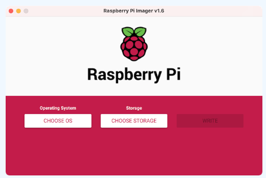
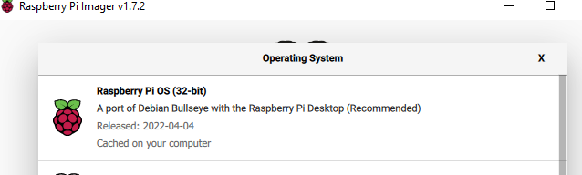
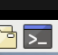
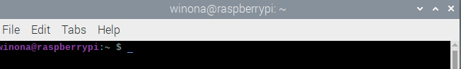
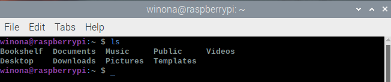
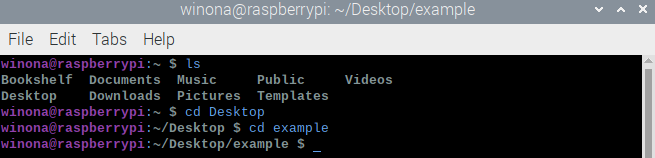
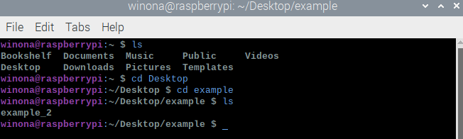
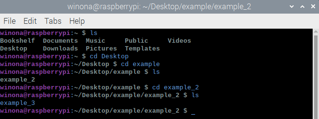
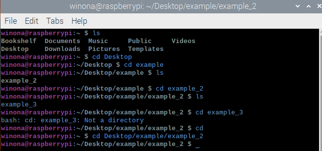

Navigation Instructions
The software section of this project is organized in a recommended order,
but can be easily navigated through with the use of the side navigation bar.
For each lesson there are multiple resources for the user: Along with the step-by-step instructions on this page, there is also a YouTube
video presentation.
Materials
To get started, here is a list of materials you will need for software instillation:
- Raspberry Pi 4
- Micro SD Card (32GB)
- RTL-SDR
- A computer monitor
- Keyboard
- Ethernet cable
- Radio antenna
- Personal computer
Before starting this tutorial, it’s highly recommended to go through the Software Vocabulary section to get familiar with the concepts explained in the following tutorial.
Introduction
Most of us familiar with using a Mac or PC computer and are comfortable with this kind of set up. This project’s set up is going to be different than these systems, but not difficult to navigate after spending some time getting familiar with all of the components. For this project, we will be using a Raspberry Pi as our computing device. This type of computing device doesn’t store data locally, so we will need to use an SD card for storage. Since we will be starting with a computing device that doesn’t have a preinstalled OS or GUI, we will need to set these up so that we can interact with the computer with ease. We chose Raspberry Pi OS, which is a version of Linux built to run on the Pi.Imaging the Micro SD card
You can install Pi Imager from this website: Download
Click on CHOOSE OS and click on the first option Raspberry Pi OS (32-bit).
Click on CHOOSE STORAGE and click on the first option that has the SD card.
After the writing process is done, safely eject your micro SD card and place it into your Raspberry Pi.

Where to place the SD card in Raspberry Pi.
Raspberry Pi Set Up
To get started, we need to make sure that all our wires are hooked up and ready to go.

This is what the Pi should look like. (You can choose which USB ports you want to use)
Make sure all connections we set up in the beginning of the tutorial are still in place so that our system will start up on the monitor screen. The system will now prompt you to choose your location settings, and to set a username and password. Once this set up process is complete, it will check for updates.
Updates
The system will now scan for updates. Click Next to update and Restart once it prompts you to.
Introduction to Command Line Terminal
What is command line?
Command line or “Command Line User Interface”: is a way of communicating with your computer through typed commands; this is usually done through the computer’s terminal.


Our computers are usually run through a GUI (graphical user interface), and so we are used to a different way of navigating through our systems.
For example: If you are on your desktop and want to go into your documents folder on your desktop, you will click on that folder and it will open up to display the contents in your documents folder. This function is run through a GUI.
In command line, we don’t have a GUI that makes it so that we can double click into a location, instead we will need to type in our commands into our terminal.
Tip: Linux uses case sensitive code so that means that we need to be very careful about lower-case and upper-case letter. From now on, it’s a good rule of thumb to use all lower case letters so we don’t run into mistakes like this.
Another note about Linux is that putting spaces when naming a file/document can cause you trouble later on. Instead of using a space, use “_” an underscore like I did in these files.
Exercise:
For this exercise we are going to be using the command line in our Raspberry Pi This example is specific to the Linux operating system. You can click on the Terminal Icon at the top of your screen or access your terminal through the command Ctrl + Alt + T
1. Create a folder on your desktop that is called “example”
2. Inside of the “example” folder, create another folder called “example_2”
3. Inside of the “example_2” folder create an empty file document called “example_3”
4. Now that we have our set up ready, lets navigate using our terminal and directories.

5. We have saved files on the desktop, so we will navigate there.
cd stands for ‘change directory’ and it allows the user to navigate to a different location on the computerYou can navigate to a different location on my computer by typing cd [desired location] and clicking enter

6. I can see the ‘example’ folder on my desktop so let’s change our directory again into this folder.

We can see that our other folder “example_2” is inside of this folder where we placed it earlier.
7. Let’s go inside of the example_2 folder


We can see our blank document “example_3”
8. Lets try example_3
It will not let us open this document, because it isn’t a directory/folder. It is a file.
9. Now that we are more familiar with the path that we will be taking, let’s get there with one line of code.
This command takes us back to our home navigation screen.

We are in the same location we were before.
We will continue to use a command line interface throughout various parts of this project.
Popular Linux Commands
More References
Download GNU Radio
GNU Radio is the free open source software that we will be using to help us process our data.
To learn more about GNU Radio visit this site About GNU Radio
Make sure that you have an internet connection for these next steps. We used an ethernet hook up to ensure that we had an internet connection, but you can also hook up to wifi if available. To install gnuradio on Ubuntu, open up your terminal and type in the following command:
Software Vocabulary
(API) Application Program Interface: A set of routines, protocols, and tools for building software applications.
Example 1: Google Maps API: Google Maps APIs lets developers embed Google Maps on webpages using a JavaScript or Flash interface. The Google Maps API is designed to work on mobile devices and desktop browsers.
Example 2: YouTube APIs: YouTube API: Google's APIs lets developers integrate YouTube videos and functionality into websites or applications. YouTube APIs include the YouTube Analytics API, YouTube Data API, YouTube Live Streaming API, YouTube Player APIs and others. Learn Further.
Command Line Interface: A text based interface that is used to operate software and operating systems while allowing the user to respond to visual prompts while typing single commands into the interface and receiving a reply in the same way.
Example: A command line interface can usually be accessed through your computer’s terminal. Learn Further.
Ethernet cable: Connect devices within a local area network, like PCs, routers, and switches. Learn Further.
File Compression (file zipping): a data compression method in which the logical size of a file is reduced to save disk space for easier and faster transmission over a network or the Internet. It enables the creation of a version of one or more files with the same data at a size substantially smaller than the original file.
Example: We decompress (unzip) our Ubuntu file when we open it after download. Learn Further.
Flash memory: is an electronic (solid-state) non-volatile computer storage medium that can be electrically erased and reprogrammed.
Example: Our micro SD card uses flash memory when we write the operating system onto the card. Learn Further.
GNU Radio: GNU Radio is a free and open-source software development toolkit that provides signal processing blocks to implement software radios. It can be used with readily-available low-cost external RF hardware to create software-defined radios, or without hardware in a simulation-like environment. Learn Further.
GUI (graphical user interface): [pronounced ‘gooey’] is an interface that used icons or other visual indicators to interact with electronic devices, rather than only text via command line.
Example: Some GUI operating systems are Mac OS, Microsoft Windows, and Linux variants like Ubuntu that use a GUI interface. Learn Further.
Linux: Just like Windows XP, Windows 7, Windows 8, and Mac OS X, Linux is an operating system. An operating system is software that manages all of the hardware resources associated with your desktop or laptop. To put it simply – the operating system manages the communication between your software and your hardware. Without the operating system (often referred to as the “OS”), the software wouldn’t function. The biggest differentiator between Linux and other OS is that Linux set out to be open sourced, which means that users can access it for free.
Example: We will be using Raspberry Pi OS as our operating system, which is based off of the Linux platform. You can think of it was a modified version of Linux. Learn Further.
Micro SD (secure digital) card: A type of very small memory card typically used in mobile phones and other portable devices.
Example: We use a micro SD card in our Raspberry Pi computer as a memory storage for our data that we collect with our telescope. Learn Further.
Operating System (OS): The software that supports a computer's basic functions, such as scheduling tasks, executing applications, and controlling peripherals.
Example: Mac OS, Microsoft Windows, and Ubuntu MATE are some examples of what an operating system are. Learn Further.
Python: An object-oriented, high-level programming language with integrated dynamic semantics primarily for web and app development. More simply it’s a programming language that is easy for developers to read and translate. Python also supports the use of modules and packages, which means that you can create a program and use it in another project by importing it.
Example: Python is used in projects such as the YouTube platform, programming NASA equipment, and Google’s search engine. Learn Further.
Raspberry Pi: The Raspberry Pi is a low cost, credit-card sized computer that plugs into a computer monitor or TV, and uses a standard keyboard and mouse. It is a capable little device that enables people of all ages to explore computing, and to learn how to program in languages like Scratch and Python. It’s capable of doing everything you’d expect a desktop computer to do, from browsing the internet and playing high-definition video, to making spreadsheets, word-processing, and playing games.
Example: There are many different versions of this computer, we will be using Raspberry Pi 4 for our project. Learn Further.